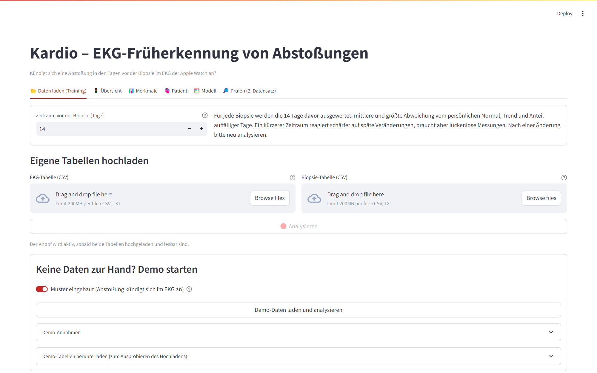
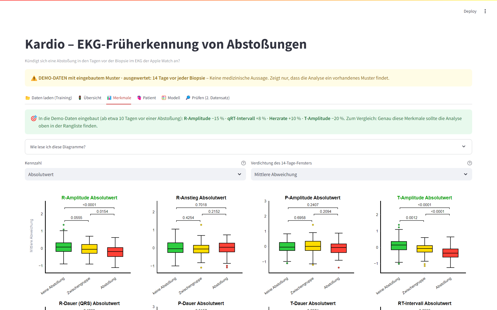
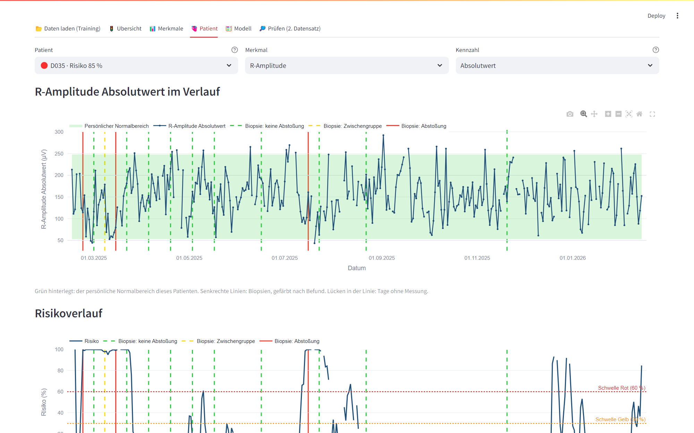

Herztransplantation in Deutschland
Ein neues Herz.
Und dann beginnt das Warten.
~400
Herztransplantationen pro Jahr
bis 20 %
Patienten erlebt im ersten Jahr eine Abstoßung
7 bis 12
Biopsien im ersten Jahr, jede ein Eingriff am Herzen
Das Problem
Die Biopsie sieht nur den Moment.
Dazwischen ist die Klinik blind.
Eine Abstoßung kündigt sich über Tage an. Entdeckt wird sie erst beim nächsten Kalendertermin, mit einem Katheter im Herzen. Zu spät, oder unnötig oft.
Was fehlt: ein Frühwarnsystem, das jeden Tag hinschaut, ohne Eingriff.
Die Idee
Das Herz hört man, bevor es laut wird.
⌚
30 Sekunden EKG täglich
Apple Watch, zu Hause, kein Termin.
→
🧬
Persönliches Normal
11 EKG-Merkmale: Amplituden, Dauern, Intervalle, Herzrate. Jeder Patient ist sein eigener Maßstab.
→
📈
Abweichung erkennen
Driftet das EKG vom eigenen Normal weg, lernt das Modell: so sieht es vor einer Abstoßung aus.
→
🚦
Ampel pro Patient
Grün, Gelb, Rot. Und ein Befundtext für den Arzt.
Kardio
Zwei Tabellen. Ein roter Knopf.
EKG-Daten und Biopsiebefunde hochladen. Spaltennamen dürfen abweichen, das System ordnet sie zu.

Übersicht
Wer braucht heute Aufmerksamkeit?
Jeder Patient mit aktuellem Risiko. Sortiert nach Dringlichkeit.

Merkmale
Die Auswertung, die Kardiologen kennen.
Drei Befundgruppen, p-Werte, Trennschärfe. Automatisch statt in Handarbeit.

Patient
Das Risiko steigt, Tage vor der Biopsie.
Verlauf, persönlicher Normalbereich, Biopsien als Marker, KI-Befundtext mit geprüften Zahlen.

Funktioniert die Maschine?
Trainiert an 40 Patienten. Geprüft an 30 anderen.
0,97
Trennschärfe am unabhängigen Datensatz
86 % der Abstoßungen erkannt, 4 % Fehlalarme.
0,52
Gegenprobe ohne Muster
Wo nichts drin ist, findet das System nichts. Kein Dauer-Alarm.
Erzeugte Demo-Daten mit eingebautem Muster. Beweist die Maschine, nicht die Medizin. Dafür brauchen wir echte Biopsiedaten.
Was das bringt
Früher sehen. Gezielter handeln.
Patient: Warnung, bevor Symptome da sind. Therapie früher, Schaden kleiner.
Arzt: eine Ampel pro Patient statt Datenberge. Ein Befundtext mit geprüften Zahlen.
Klinik: Biopsien nach Risiko statt nach Kalender. Weniger Eingriffe, weniger Kosten.
Alltag: 30 Sekunden am Handgelenk. Die Daten fließen, die Ampel aktualisiert sich.
Was jetzt kommt
Die Maschine steht. Jetzt braucht sie echte Daten.
SCHRITT 1Echte Biopsiebefunde einspielen. Das System ist dafür gebaut.
SCHRITT 2Validierung an unabhängigen Patienten, Schwellen mit Kardiologen festlegen.
SCHRITT 3Pilot in einem Transplantationszentrum, Daten direkt von der Watch.
Kardio
Das Herz hört man, bevor es laut wird.
Gebaut an einem Tag. Hackathon 2026.